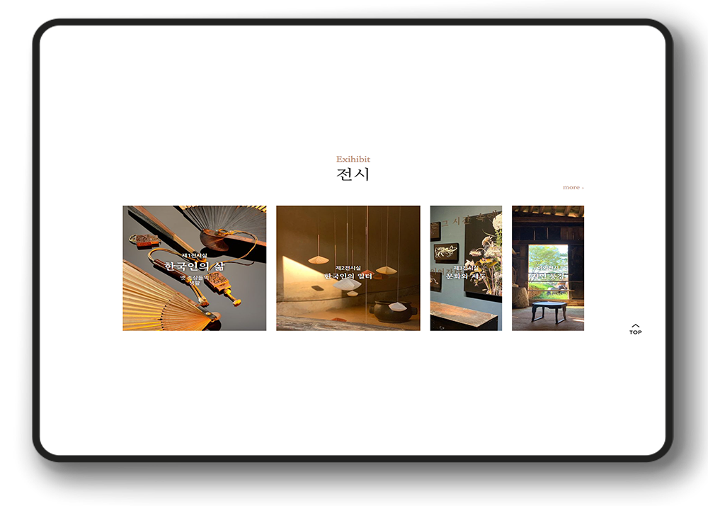

Date : 7/22-8/5
Focus : HTML/CSS/JS
Onyang-museum
01
Topic
온양민속 박물관은 문화유산을 보존하고 전달하는 역할을 하면서 생활문화바탕으로
연구, 수집하고 다양한 전시와 열린교육을 통해 문화예술 보존에 앞장서는 기업입니다.
02
Styleguide
point color
세련된 포인트 컬러를 선정하여 박물관에 어울리는 컬러를 선정하였으며
회색계열을 함께 선정하여 깔끔하게 보일 수 있도록 하고 통일성을 주었습니다.
- #BF9278
- #303030
- #F1F1F1
- #FFF
font
- Noto Serif KR
- 나눔스퀘어
Nanum squre - 나눔 명조
Nanum myongjo
Grid

기본 메인 폰트는 나눔 스퀘어를 적용하여 사용자들의 가독성을 높여주고 메인 타이틀과
소제목에는 'Noto serif KR'과 '나눔 명조'를 사용하여 박물관에 어울리는 폰트를 사용하였습니다.
전체적인 사이즈는 1920px로 설정하고 이너사이즈는 1400px로 설정하여 여백을 발생시켜
이미지와 텍스트의 배치를 조화롭게 하였습니다.
03
Web view
04
Details
상단 네비게이션을 생략 없이 모든 카테고리를 보이게 하고
메인 비주얼에는 3개의 이미지를 슬라이드 효과를 적용하였으며
닷츠를 활용하여 클릭시 이미지 이동이 될 수 있도록 하였습니다.
스크립트를 적용하여 마우스 적용시 해당 이미지가 확대되어 강조 될 수 있도록 하였습니다.
more버튼을 적용하여 클릭시 해당 페이지로 바로 이동할 수 있도록 적용하였습니다.

5개의 이미지가 보이도록 자동슬라이드 효과를 적용하였습니다.
05
Responsive web